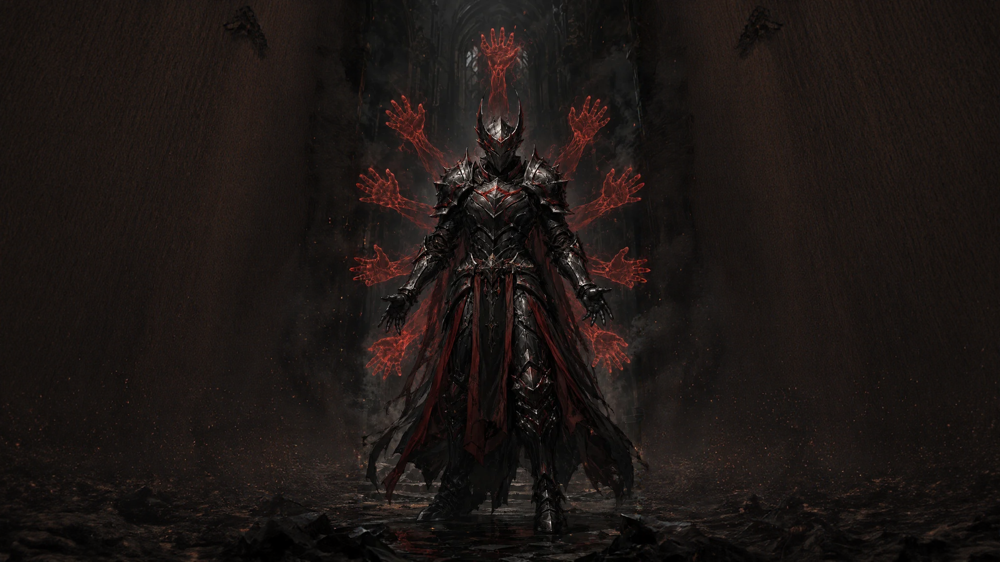

Character
2026-05-20
Halk'en Orveth
A Cynosure-aligned Answered vessel of Auctoriel and one of the clearest living explanations of what Dominion means in practice.
This homepage prototype keeps the live SiNE Archives language, then adds the information a first-time reader needs: recent records, visible characters, geographic anchors, and a clearer systems primer for Redactory and Divination.
The live homepage already indexes sections well. This prototype adds a front-loaded recent-record layer so returning readers can see what changed before they dive into the deeper directories.
A Cynosure-aligned Answered vessel of Auctoriel and one of the clearest living explanations of what Dominion means in practice.
A retired priest, saint-assessor, and confirmed Hallowed vessel whose judgment of wasted potential has curdled into doctrine.
The northern frontier where the Twilight Band ends, the dark begins, and the War of the Threshold is fought in earnest.
The Church’s regulated order of Beatified field clergy for possession, expulsion, and high-risk divine engagement.
Terra’s dominant faith institution and the main authority on rites, possession, Beatification, and Seraphic hierarchy.
The division that does not officially exist to handle the things that officially do not exist.
The live site already has strong individual pages. This layer makes the cast legible from the homepage, especially for readers landing cold on the world and trying to understand who carries its pressure.

A Cynosure-aligned Answered vessel of Auctoriel, Seraphim of Dominion, and one of the clearest living examples of what the Answered mean in practice.
“Dominion is easiest to praise when it is a word in liturgy. It is harder to endure when it grows hands.”
Characters and institutions land harder once the homepage shows where they operate: frontier coasts, academy cities, and geological hazard zones that explain why the world behaves the way it does.
The coastal frontier where the Twilight Band meets permanent dark, and where the War of the Threshold is kept from becoming everyone else’s problem.

Home of the Academy of Syr’lene, the city that feels less like it developed an institution and more like the institution built a city around itself.

An 85 km collapsed caldera where BrightCrystal densifies to dangerous purity and the planet’s relation to Vael’Khar becomes physically visible.
This is the section the current homepage is missing most. It should give new readers just enough structure to understand the difference between routing, fusion, and the materials those powers run on.
The practiced ability to force reality to express a different valid state without rewriting the world’s underlying laws.
Redactory is routing, not creation. A practitioner selects from possibilities reality already allows, then forces one of those possibilities to happen here, now, under pressure.
It gives the homepage a clean on-ramp into the world’s logic: temporary instancing, stable reconfiguration, the Dive, and the idea that deeper work means more foundational contact.
The Academy of Syr’lene, Vrenne, Anchor domains, and the Index Theorem all radiate outward from this system, so surfacing it here clarifies half the archive.
Routing / Dive / Anchor / Strata / Stable reconfiguration
The goal is not to flatten the archive into one long page. It is to make the front door denser, more navigable, and more legible, then hand readers into the existing section pages with context.
Named figures, vessels, witnesses, clergy, and dangerous exceptions.
Cities, frontiers, margins, and geographic structures with institutional consequences.
Redactory, Divination, BrightCrystal, and the theoretical scaffolding beneath them.
Start with what moved most recently, then drop into the archive with sharper intent.